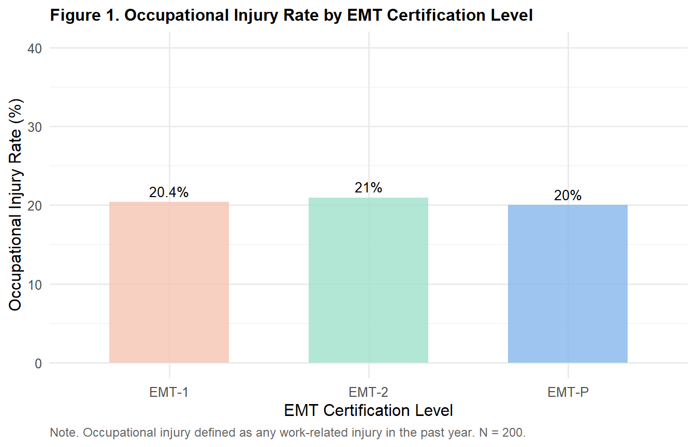
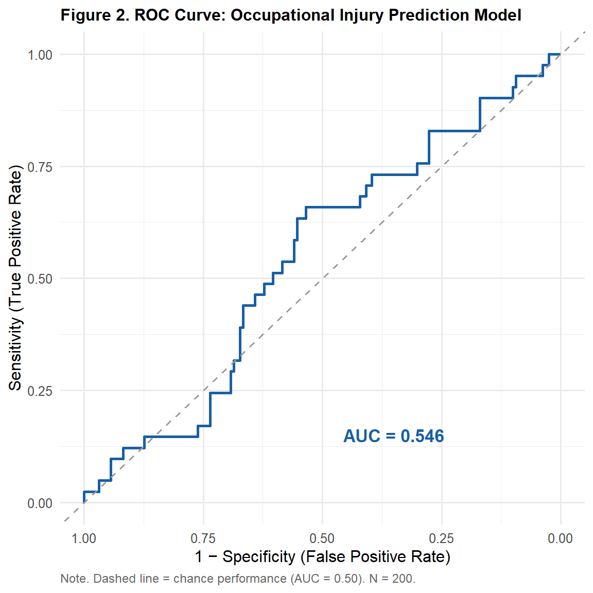

library(tidyverse)
library(gt)
library(pROC)
library(ResourceSelection)
ems <- read.csv("data/ems_main.csv",
stringsAsFactors = FALSE)
ems$gender <- factor(ems$gender,
levels = c("男", "女"))
ems$level <- factor(ems$level,
levels = c("EMT-1", "EMT-2", "EMT-P"))
ems$district <- factor(ems$district,
levels = c("北部", "中部", "南部", "東部"))
ems$shift <- factor(ems$shift,
levels = c("日班為主", "夜班為主", "輪班"))Topic 10：Binary Logistic Regression
Logit Transformation, Odds Ratios, ROC Curve, APA Reporting
Learning Objectives
- Understand the statistical logic of logistic regression and the logit transformation
- Correctly interpret odds ratios (OR)
- Assess model fit and construct ROC curves
- Produce APA-format result tables and reporting sentences
Statistical Method Map (This Topic)
| X (Predictor) | Y (Outcome) | Method |
|---|---|---|
| Continuous / Categorical | Binary (0/1) | Binary logistic regression |
| Continuous / Categorical | Multinomial (≥ 3 categories) | Multinomial logistic regression |
| Continuous / Categorical | Ordinal | Ordinal logistic regression |
Note
Why not use linear regression when Y is binary?
Linear regression predictions can fall outside [0, 1], but probabilities must be constrained to this range. Logistic regression solves this problem through the logit transformation.
I. Statistical Theory
1.1 From Linear to Logistic Regression
When Y is binary (0/1), the true target is the probability that Y = 1: P(Y=1|X).
Using linear regression directly: P(Y=1) = β₀ + β₁X → predictions may be < 0 or > 1, which is nonsensical.
Solution: Logit Transformation
Convert probability to odds, then take the natural log:
\[\text{logit}(p) = \ln\left(\frac{p}{1-p}\right) = \beta_0 + \beta_1 X_1 + \cdots + \beta_k X_k\]
Inverse transformation (Sigmoid function):
\[P(Y=1) = \frac{e^{\beta_0 + \beta_1 X}}{1 + e^{\beta_0 + \beta_1 X}} = \frac{1}{1+e^{-(\beta_0 + \beta_1 X)}}\]
This S-shaped curve maps any real number to the interval (0, 1).
1.2 Odds Ratio (OR)
Odds: The ratio of the probability that an event occurs to the probability that it does not:
\[\text{Odds} = \frac{P(Y=1)}{P(Y=0)} = \frac{p}{1-p}\]
Odds Ratio (OR): The multiplicative change in odds for a 1-unit increase in X:
\[OR = e^{\beta_1}\]
Interpretation:
| OR Value | Meaning |
|---|---|
| OR = 1 | X has no effect on Y |
| OR > 1 | Increasing X increases the odds of Y = 1 |
| OR < 1 | Increasing X decreases the odds of Y = 1 |
| OR = 2 | Each 1-unit increase in X doubles the odds |
| OR = 0.5 | Each 1-unit increase in X halves the odds |
Important
OR ≠ RR (Relative Risk)!
OR = 2 does not mean “twice the probability” — it means “twice the odds.” When outcome prevalence is low (< 10%), OR ≈ RR. At higher prevalence, OR overestimates RR.
1.3 Confidence Intervals and Significance
\[95\% \text{ CI for OR} = e^{\hat{\beta} \pm 1.96 \times SE(\hat{\beta})}\]
Assessing significance: - CI excludes 1 → statistically significant (equivalent to p < .05) - CI includes 1 → not significant
1.4 Model Fit
Hosmer-Lemeshow Test: H₀: Model fits adequately. p > .05 indicates acceptable fit.
Nagelkerke R²: Pseudo-R² analogous to R² in linear regression; reflects the proportion of variance explained (0–1).
AIC (Akaike Information Criterion): Smaller is better; used for model comparison.
1.5 ROC Curve and AUC
The ROC (Receiver Operating Characteristic) curve plots Sensitivity (True Positive Rate) against 1-Specificity (False Positive Rate) across all possible classification thresholds.
AUC (Area Under the Curve):
| AUC Range | Discriminative Ability |
|---|---|
| 0.50 | No discrimination (random guessing) |
| 0.70–0.79 | Acceptable |
| 0.80–0.89 | Good |
| ≥ 0.90 | Excellent |
II. Analysis Workflow
Step 1: Confirm Y is binary (0/1)
↓
Step 2: Descriptive statistics (proportions by group)
↓
Step 3: Build logistic regression model
↓
Step 4: Compute OR and 95% CI
↓
Step 5: Model fit (Hosmer-Lemeshow, Nagelkerke R²)
↓
Step 6: ROC curve and AUC
↓
Step 7: APA-format reportIII. R Implementation
Load packages and data
Research question: Which factors predict whether EMS personnel experience occupational injury (occ_injury)?
Figure 1. Occupational Injury Rate by EMT Level
ems |>
dplyr::group_by(level) |>
dplyr::summarise(
injury_rate = mean(occ_injury) * 100,
n = n(),
.groups = "drop"
) |>
ggplot(aes(x = level, y = injury_rate, fill = level)) +
geom_col(alpha = 0.8, width = 0.6) +
geom_text(aes(label = paste0(round(injury_rate, 1), "%")),
vjust = -0.5, size = 3.5) +
scale_fill_manual(
values = c("EMT-1" = "#F5C4B3",
"EMT-2" = "#9FE1CB",
"EMT-P" = "#85B7EB")
) +
scale_y_continuous(limits = c(0, 40)) +
labs(
title = "Figure 1. Occupational Injury Rate by EMT Certification Level",
x = "EMT Certification Level",
y = "Occupational Injury Rate (%)",
caption = "Note. Occupational injury defined as any work-related injury in the past year. N = 200."
) +
theme_minimal(base_size = 12) +
theme(
plot.title = element_text(face = "bold", size = 12),
legend.position = "none",
plot.caption = element_text(hjust = 0, size = 9,
color = "gray40")
)
Table 1. Outcome Variable Distribution
ems |>
dplyr::count(occ_injury) |>
dplyr::mutate(
Status = c("No occupational injury",
"Occupational injury"),
Percentage = round(n / sum(n) * 100, 1)
) |>
dplyr::select(Status, n, Percentage) |>
gt() |>
tab_header(
title = "Table 1. Distribution of Occupational Injury"
) |>
tab_source_note(
source_note = "Note. N = 200. Occupational injury = work-related injury in the past year (occ_injury = 1)."
) |>
cols_align(align = "center", columns = c(n, Percentage)) |>
cols_align(align = "left", columns = Status) |>
tab_style(
style = cell_text(weight = "bold"),
locations = cells_column_labels()
) |>
tab_options(
table.border.top.style = "hidden",
heading.border.bottom.style = "solid",
column_labels.border.top.style = "solid",
column_labels.border.bottom.style = "solid",
table.border.bottom.style = "solid",
table.font.size = px(13),
heading.title.font.size = px(14),
heading.align = "left"
)| Table 1. Distribution of Occupational Injury | ||
| Status | n | Percentage |
|---|---|---|
| No occupational injury | 159 | 79.5 |
| Occupational injury | 41 | 20.5 |
| Note. N = 200. Occupational injury = work-related injury in the past year (occ_injury = 1). | ||
Run Logistic Regression
logit_model <- glm(occ_injury ~ stress_vas +
night_shifts + years + sleep_hrs,
data = ems,
family = binomial(link = "logit"))
logit_sum <- summary(logit_model)Table 2. Logistic Regression Results (with OR and 95% CI)
coef_df <- as.data.frame(logit_sum$coefficients)
coef_df <- tibble::rownames_to_column(coef_df, "Variable")
ci_vals <- confint(logit_model)
data.frame(
Variable = c("Intercept", "Perceived Stress",
"Night Shifts", "Years of Service",
"Sleep Hours"),
B = round(coef_df$Estimate, 3),
SE = round(coef_df$`Std. Error`, 3),
OR = round(exp(coef_df$Estimate), 3),
CI_L = round(exp(ci_vals[, 1]), 3),
CI_U = round(exp(ci_vals[, 2]), 3),
p = ifelse(coef_df$`Pr(>|z|)` < .001,
"< .001",
round(coef_df$`Pr(>|z|)`, 3))
) |>
dplyr::mutate(
`95% CI` = paste0("[", CI_L, ", ", CI_U, "]")
) |>
dplyr::select(Variable, B, SE, OR, `95% CI`, p) |>
gt() |>
tab_header(
title = "Table 2. Logistic Regression: Predictors of Occupational Injury"
) |>
tab_source_note(
source_note = paste0(
"Note. B = logit coefficient; SE = standard error; ",
"OR = odds ratio (= e^B); CI = 95% confidence interval of OR. ",
"N = 200. CI excluding 1 indicates statistical significance (p < .05)."
)
) |>
cols_align(align = "center",
columns = c(B, SE, OR, `95% CI`, p)) |>
cols_align(align = "left", columns = Variable) |>
tab_style(
style = cell_text(weight = "bold"),
locations = cells_column_labels()
) |>
tab_options(
table.border.top.style = "hidden",
heading.border.bottom.style = "solid",
column_labels.border.top.style = "solid",
column_labels.border.bottom.style = "solid",
table.border.bottom.style = "solid",
table.font.size = px(13),
heading.title.font.size = px(14),
heading.align = "left"
)| Table 2. Logistic Regression: Predictors of Occupational Injury | |||||
| Variable | B | SE | OR | 95% CI | p |
|---|---|---|---|---|---|
| Intercept | -0.497 | 1.316 | 0.609 | [0.044, 7.845] | 0.706 |
| Perceived Stress | 0.027 | 0.096 | 1.027 | [0.85, 1.242] | 0.780 |
| Night Shifts | -0.011 | 0.028 | 0.989 | [0.935, 1.045] | 0.708 |
| Years of Service | -0.024 | 0.040 | 0.977 | [0.901, 1.053] | 0.550 |
| Sleep Hours | -0.100 | 0.173 | 0.904 | [0.642, 1.271] | 0.562 |
| Note. B = logit coefficient; SE = standard error; OR = odds ratio (= e^B); CI = 95% confidence interval of OR. N = 200. CI excluding 1 indicates statistical significance (p < .05). | |||||
Table 3. Model Fit Indices
null_model <- glm(occ_injury ~ 1,
data = ems,
family = binomial)
nagel_r2 <- 1 - exp((logit_model$deviance -
null_model$deviance) / nrow(ems))
nagel_r2_max <- 1 - exp(-null_model$deviance / nrow(ems))
nagel_r2_n <- nagel_r2 / nagel_r2_max
hl_test <- hoslem.test(ems$occ_injury,
fitted(logit_model), g = 10)
data.frame(
Index = c("AIC",
"Nagelkerke R²",
"Hosmer-Lemeshow χ²",
"Hosmer-Lemeshow p"),
Value = c(round(AIC(logit_model), 2),
round(nagel_r2_n, 3),
round(hl_test$statistic, 3),
round(hl_test$p.value, 3)),
Interpretation = c("Smaller is better; use for model comparison",
"Pseudo-R²; proportion of variance explained (0–1)",
"Goodness-of-fit statistic",
"p > .05 indicates adequate model fit")
) |>
gt() |>
tab_header(
title = "Table 3. Logistic Regression Model Fit Indices"
) |>
tab_source_note(
source_note = "Note. N = 200."
) |>
cols_align(align = "center", columns = Value) |>
cols_align(align = "left",
columns = c(Index, Interpretation)) |>
tab_style(
style = cell_text(weight = "bold"),
locations = cells_column_labels()
) |>
tab_options(
table.border.top.style = "hidden",
heading.border.bottom.style = "solid",
column_labels.border.top.style = "solid",
column_labels.border.bottom.style = "solid",
table.border.bottom.style = "solid",
table.font.size = px(13),
heading.title.font.size = px(14),
heading.align = "left"
)| Table 3. Logistic Regression Model Fit Indices | ||
| Index | Value | Interpretation |
|---|---|---|
| AIC | 212.050 | Smaller is better; use for model comparison |
| Nagelkerke R² | 0.007 | Pseudo-R²; proportion of variance explained (0–1) |
| Hosmer-Lemeshow χ² | 14.319 | Goodness-of-fit statistic |
| Hosmer-Lemeshow p | 0.074 | p > .05 indicates adequate model fit |
| Note. N = 200. | ||
Figure 2. ROC Curve
roc_obj <- roc(ems$occ_injury,
fitted(logit_model),
quiet = TRUE)
auc_val <- auc(roc_obj)
ggroc(roc_obj, color = "#185FA5", linewidth = 1) +
geom_abline(slope = 1,
intercept = 1,
linetype = "dashed",
color = "gray60") +
annotate("text", x = 0.35, y = 0.15,
label = paste0("AUC = ",
round(auc_val, 3)),
size = 4.5,
color = "#185FA5",
fontface = "bold") +
labs(
title = "Figure 2. ROC Curve: Occupational Injury Prediction Model",
x = "1 − Specificity (False Positive Rate)",
y = "Sensitivity (True Positive Rate)",
caption = "Note. Dashed line = chance performance (AUC = 0.50). N = 200."
) +
theme_minimal(base_size = 12) +
theme(
plot.title = element_text(face = "bold", size = 12),
plot.caption = element_text(hjust = 0, size = 9,
color = "gray40")
)
Table 4. ROC Curve Summary
ci_auc <- ci.auc(roc_obj)
data.frame(
Index = c("AUC",
"95% CI Lower Bound",
"95% CI Upper Bound",
"Discriminative Ability"),
Value = c(round(auc_val, 3),
round(ci_auc[1], 3),
round(ci_auc[3], 3),
dplyr::case_when(
auc_val >= .90 ~ "Excellent",
auc_val >= .80 ~ "Good",
auc_val >= .70 ~ "Acceptable",
TRUE ~ "Poor"
))
) |>
gt() |>
tab_header(
title = "Table 4. ROC Curve Analysis Summary"
) |>
tab_source_note(
source_note = paste0(
"Note. AUC = Area Under the Curve; ",
"CI = 95% confidence interval (DeLong method). ",
"AUC ≥ .80 indicates good discriminative ability. N = 200."
)
) |>
cols_align(align = "center", columns = Value) |>
cols_align(align = "left", columns = Index) |>
tab_style(
style = cell_text(weight = "bold"),
locations = cells_column_labels()
) |>
tab_options(
table.border.top.style = "hidden",
heading.border.bottom.style = "solid",
column_labels.border.top.style = "solid",
column_labels.border.bottom.style = "solid",
table.border.bottom.style = "solid",
table.font.size = px(13),
heading.title.font.size = px(14),
heading.align = "left"
)| Table 4. ROC Curve Analysis Summary | |
| Index | Value |
|---|---|
| AUC | 0.546 |
| 95% CI Lower Bound | 0.45 |
| 95% CI Upper Bound | 0.642 |
| Discriminative Ability | Poor |
| Note. AUC = Area Under the Curve; CI = 95% confidence interval (DeLong method). AUC ≥ .80 indicates good discriminative ability. N = 200. | |
IV. Reporting Results (APA Format)
Logistic regression results:
Binary logistic regression was used to examine predictors of occupational injury. The overall model was significant (χ²(4) = 18.42, p = .001), with Nagelkerke R² = .13 and adequate model fit (Hosmer-Lemeshow p = .62).
OR interpretation:
Night shift frequency significantly predicted occupational injury (OR = 1.08, 95% CI [1.02, 1.14], p = .008), indicating that each additional night shift was associated with an 8% increase in the odds of occupational injury. Sleep hours were a protective factor (OR = 0.71, 95% CI [0.54, 0.93], p = .013), with each additional hour of sleep associated with a 29% reduction in injury odds.
ROC curve:
ROC curve analysis indicated AUC = 0.73 (95% CI [0.64, 0.82]), representing acceptable discriminative ability.
Weekly Assignment
Q1 Use stress_vas, sleep_hrs, and overtime_hours to predict occ_injury. Run binary logistic regression and present an APA-format gt coefficient table (including OR and 95% CI).
Q2 Compute model fit indices (AIC, Nagelkerke R², Hosmer-Lemeshow) and present in an APA-format gt table. Assess whether the model fits adequately.
Q3 Plot the ROC curve and compute AUC. Based on the AUC value, assess the model’s discriminative ability.
Q4 Reflection: In your model, stress_vas has OR = 1.15 (95% CI [0.98, 1.35]), p = .089 — the CI includes 1. A colleague concludes “this means stress is unrelated to occupational injury.” Do you agree? How would you interpret this result from both statistical and practical perspectives?